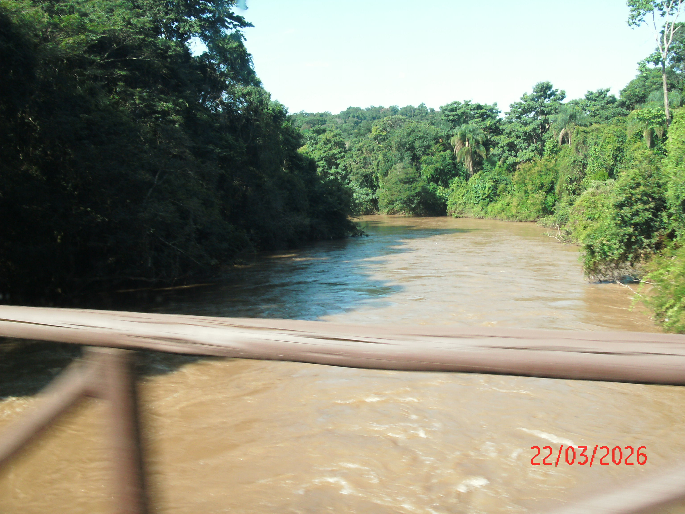
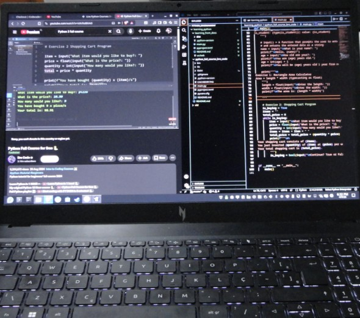
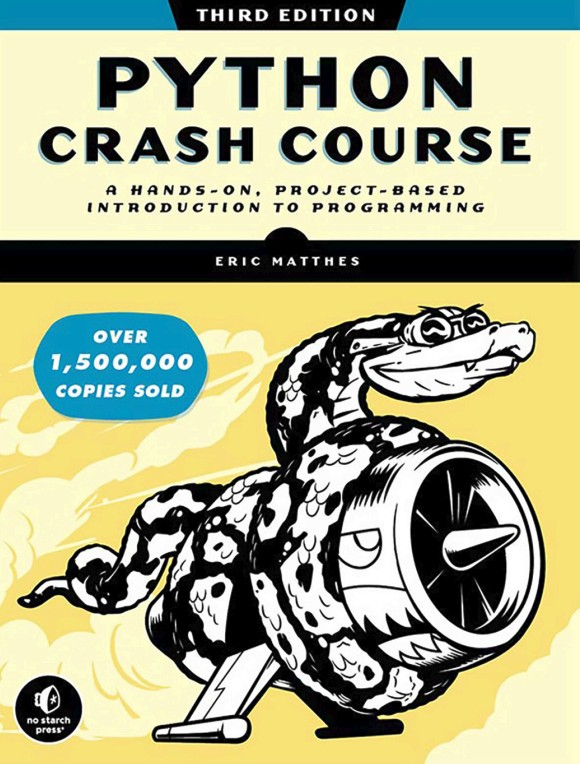

Python
Será que consigo aprender a "codar"?
O que vai ser do futuro do mercado de trabalho? Qual será o futuro do trabalho?
Agronomia é muito legal.

Eu gosto bastante de agronomia. Meu contato com os animais, plantas, com o meio de produção rural é desde pequeno. Já gostei mais de plantas do que animais, já fui vegetariano. Depois voltei a gostar de churrasco novamente, e fui estudar agronomia.
Ao mesmo tempo que desde pequeno tive contato com o meio rural, sempre gostei de computadores. Tudo começou com os videogames, e a minha familiaridade com os computadores inicialmente surgiu com fazer eles executarem os jogos da maneira que eu queria. Depois realizar modificações nos jogos, por exemplo na época dos mods de Minecraft (lembram que sempre que tinha que deletar o maldito METAINF?). Depois foi modar Skyrim, sim eu sou dessa geração.
E a partir daí não era somente jogos. Era editar vídeos no Movie Maker, depois no Sony Vegas Pro, editar imagens no Corel Draw, e depois com a mudança do Windows 8 foi conhecer melhor os sistemas operacionais.
A decepção com o Windows 8 foi muito grande, não é? Com certeza não fui o único que passou a odiar muita coisa da Microsoft desde a época do Windows 8. E daí, trabalhando a partir do Windows 10, comecei a conhecer como funcionava os sistemas operacionais GNU-Linux, e depois entender como funcionava usar um computador através de um terminal.

Então eu formei em Agronomia, sim, sou Engenheiro Agrônomo. Trabalhei em uma fazenda com grande emprego de tecnologia, e tive experiência em como a agricultura acontece em grande escala. Depois fui trabalhar na fazenda da família, ao mesmo tempo em que iniciei o mestrado em Produção Vegetal.
No mestrado, aprender estatística no R me fez tomar interesse novamente em programação e computação em geral. Daí eu pulei para várias rotas no meio desse caminho. Conhecer C, C++, Rust, compilar, ler documentação (viver a documentação). E, agora, estando na metade do mestrado e trabalhando como profissional liberal (assistência técnica e gerencial rural), não tenho toda a disponibilidade de tempo e disposição apaixonada de viver o C ou o Rust, ainda menos como uma primeira língua de programação. Sim, eu consigo ler e entender o que está acontecendo, mas eu ainda sou um pouco perdido nas opções, bibliotecas, pacotes, funcionalidades.
Então decidi aprender Python, para consolidar o conhecimento da lógica da programação, ciência da computação, sistemas de informação, estrutura de dados, e nunca mais ficar perdido na frente de um computador.
Gosto da agronomia. Gosto de computadores.
Agronomia eu não sou perdido. Entendo os sistemas de produção, o mercado, a situação do meu estado, do Brasil, da minha região, as demandas dos produtores, da agroindústria, etc.
Mas quando o assunto é conversar com o computador através do código, sim, eu sei usar o terminal, atualizar o meu sistema, boas práticas de segurança da informação (tenho TOC), organizar meus arquivos, mas na hora de fazer a máquina fazer o que eu quero que ela faça através de uma aplicação ou implementação que não existe ou que eu não possuo, eu não consigo fazer.
Sim, existem muitas aplicações para inúmeros fins nos computadores. Mas sempre que eu queria fazer algo e eu não encontrava uma aplicação, eu parava por aí. Isso não vai acontecer mais.
Agora eu vou quebrar minha cabeça fazendo a máquina fazer o que eu quero (ordenar meus arquivos, imprimir nas minhas fotos a data em que foram tiradas (através do metadata delas), modificar algum jogo que eu esteja jogando, e chegar, um dia, a comandar o computador e a máquina a realizar alguma implementação no mundo real para problemas da área de agronomia.
E para isso eu vou começar aprendendo Python, especificamente com este livro:

É isso. Será que você leu até aqui?
Ainda não adicionei informações de contato. Não sou muito requisitado no github. Talvez eu adicione quando eu começar a interagir com repositórios lá, ou quando eu souber que existe alguma alma viva que leia este site.